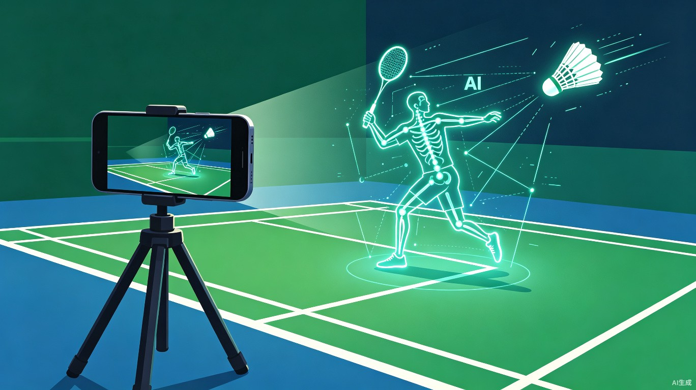
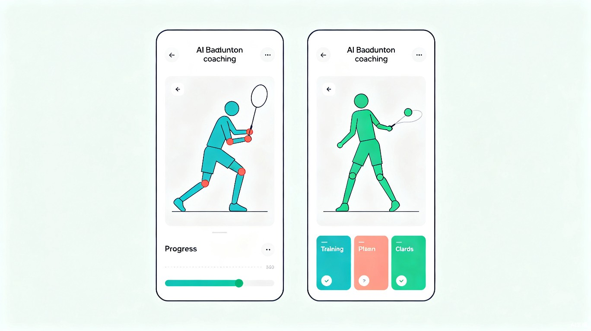
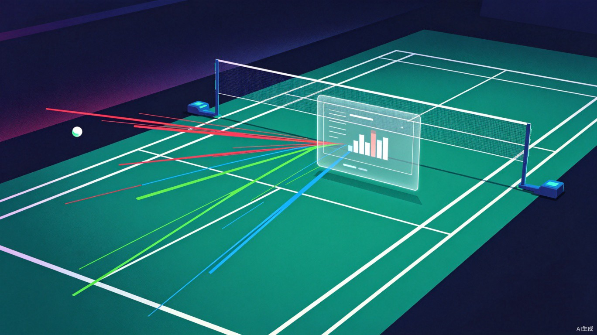
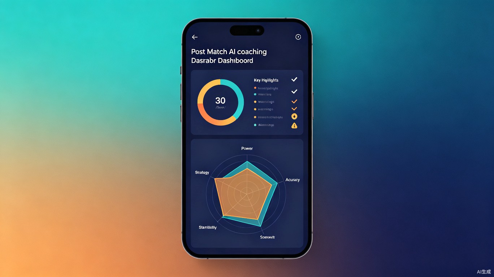
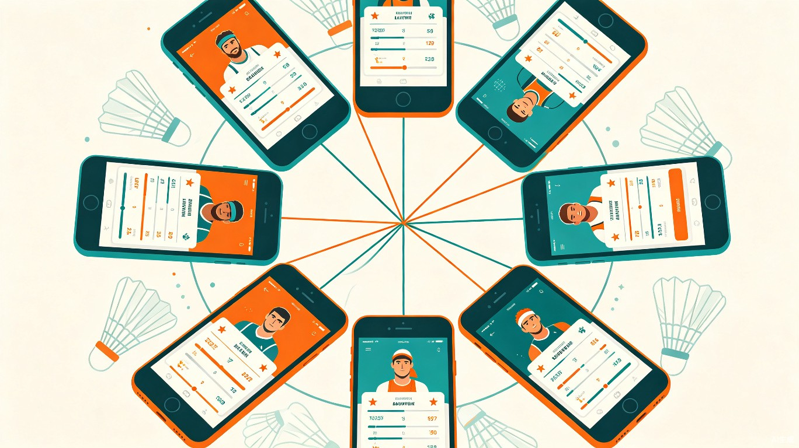
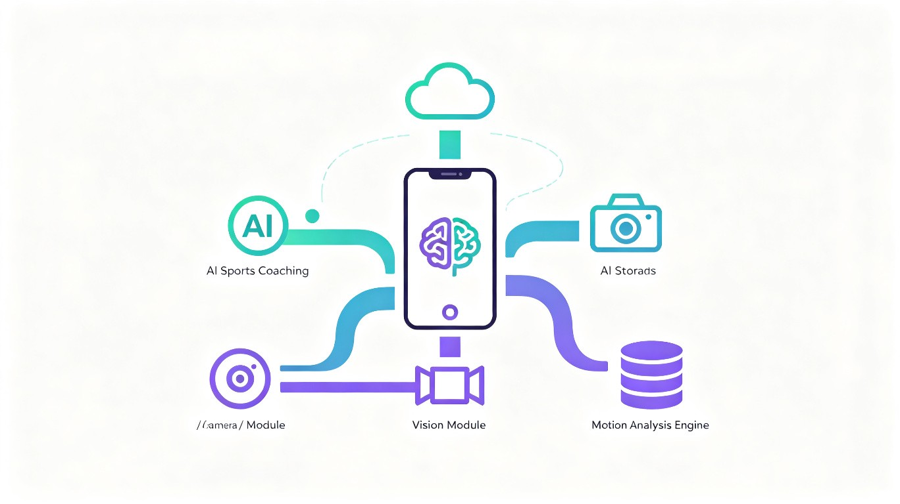

你的专属羽毛球 AI 教练
将手机架在球场边，AI 实时识别打球姿势、分析回球思路，
为每一位羽毛球爱好者生成个性化的智能训练方案。
ShuttleAI 是一款基于计算机视觉与深度学习的移动端羽毛球智能教练应用。用户只需将手机架在球场边缘，应用即可通过摄像头实时捕捉场上球员的动作姿态，自动分析击球技术、跑位路线与回球策略，在训练和比赛中提供实时指导，并在每局结束后生成详细的个人表现报告与改进建议。
通过手机摄像头捕捉球员骨骼关节点，实时分析挥拍角度、步法移动和身体重心变化
追踪羽毛球飞行轨迹，记录落点分布，分析回球线路选择和战术偏好
根据个人技术水平、弱项分析和训练目标，自动生成循序渐进的个性化训练方案
每局比赛结束后自动生成表现评估报告，包含关键数据统计和技术改进建议
羽毛球作为全球参与人数超过 3 亿的运动项目，爱好者们在自我提升过程中面临着普遍而长期未被解决的难题。
一对一私教课程通常每小时 200-500 元，普通爱好者难以承担长期系统训练的费用
业余球友往往无法察觉自身动作缺陷，错误习惯长期固化后极难纠正，影响技术上限
传统训练全凭经验和感觉，没有客观的数据记录与对比分析，进步速度缓慢且盲目
ShuttleAI 围绕"感知 — 分析 — 指导 — 提升"的闭环，构建四大核心功能模块，覆盖从热身到赛后复盘的完整训练场景。

系统通过MediaPipe Pose 实时检测球员 33 个骨骼关键点，结合羽毛球运动学模型，对握拍方式、引拍幅度、击球点高度、身体重心转移、步法时机等维度进行全方位评估。当检测到异常动作时，应用通过振动反馈和语音提示即时提醒，并在屏幕上以虚拟骨骼叠加的方式直观展示标准动作与当前动作的对比差异。
记录每次挥拍的完整运动轨迹，分析引拍路径、击球角度和随挥动作的规范性
识别启动步、交叉步、并步等步法类型，评估移动效率与回中速度

通过目标检测算法追踪高速飞行的羽毛球，构建每一拍的完整数据链：发球类型、接发球质量、回球线路、落点位置、杀球/吊球/高远球比例等。系统将球场划分为多个区域，统计落点热力图，识别用户在进攻、防守、过渡球中的战术倾向与盲区，并提供针对性的战术优化建议。
可视化展示击球落点分布，直观呈现战术偏好与球场覆盖盲区
分析对手回球线路习惯，自动标记对手弱点区域并建议进攻策略

基于多次训练和比赛的数据积累，系统建立每位用户的个人技术画像，量化评估力量、速度、耐力、精准度、战术意识五大维度。AI 教练引擎根据画像自动生成阶段性训练计划，包含具体练习项目、推荐时长、难度梯度调整，并随着用户进步动态更新训练内容。
从力量、速度、耐力、精准度、战术意识五个维度全面评估个人能力
根据近期表现自动调整训练计划难度，确保始终处于最佳训练区间

每场比赛结束后，系统在 60 秒内自动生成详细的技术报告：得分/失分统计、关键分回放标注、高光时刻剪辑、失误类型分类、以及与历史数据的纵向对比。用户可将报告分享至社区，与球友对比数据、交流心得，形成良性的竞技与学习氛围。
自动标记比赛中关键得分和失误回合，生成带标注的视频集锦
匿名对比同级别球友的技术数据，了解自己的相对优势和短板
羽毛球运动市场正在经历数字化转型的关键窗口期，智能体育训练工具的需求正在快速释放。
当前市场上的运动分析产品主要集中在跑步、骑行等可穿戴设备领域，球拍类运动的智能分析工具仍是蓝海。ShuttleAI 以"手机 + AI"的低门槛方案切入，无需额外硬件，降低了用户使用壁垒，具备极强的市场渗透潜力。
ShuttleAI 采用"端云协同"架构设计，在端侧保障实时性，在云端提供深度分析能力。

基于 TensorFlow Lite 部署轻量化姿态估计与球体追踪模型，实现 30fps 实时分析，延迟低于 50ms
通过 Cloud Functions 将关键帧数据上传至云端，利用大模型生成自然语言训练建议和深度战术分析
所有视频数据仅在端侧处理，云端仅上传骨骼关键点和统计数据，充分保护用户隐私
核心功能完全支持离线使用，无需网络即可完成动作识别和基础分析，联网后同步云端数据
flowchart TB
subgraph 端侧["端侧 (手机)"]
CAM["摄像头采集"]
MP["MediaPipe 姿态估计"]
YOLO["YOLO 羽毛球追踪"]
TFLITE["TFLite 动作分类"]
FEEDBACK["实时反馈引擎"]
end
subgraph 云端["云端服务"]
FIREBASE["Firebase 实时数据库"]
GCF["Cloud Functions"]
LLM["GPT-4o 报告生成"]
end
subgraph 前端["Flutter App"]
UI["实时叠加显示"]
PLAN["训练计划管理"]
COMM["社区与分享"]
end
CAM --> MP --> TFLITE --> FEEDBACK
YOLO --> TFLITE
FEEDBACK --> UI
FEEDBACK -. "关键帧数据" .-> FIREBASE
FIREBASE --> GCF --> LLM --> PLAN
PLAN --> UI
UI --> COMM
项目分四个阶段推进，从核心功能验证到完整产品上线，预计 12 个月完成首个正式版。
完成姿态检测与羽毛球追踪的核心算法原型，搭建 Flutter 基础框架，在实验室环境中验证识别准确率达到 85% 以上
集成实时动作纠正功能，开发个性化训练计划生成引擎，实现端侧 TFLite 模型部署，完成 50 人以上内测
接入大模型生成自然语言报告，开发赛后智能总结系统，上线社区功能模块，完成 500 人公测
App Store / 应用商店正式上线，推出免费基础版 + 会员订阅制商业模式，启动用户增长计划
采用"免费增值 (Freemium)"模式，降低获客门槛的同时，通过高价值功能实现变现。
基础动作识别、单局赛后统计、落点热力图、每日训练推荐
实时动作纠正、完整训练计划、AI 语音指导、深度报告分析、历史数据对比
多人同时分析、教练管理后台、团队数据看板、定制化品牌方案
与运动品牌合作推荐装备、球馆合作推广、赛事数据分析服务
相比现有市场上的运动分析方案，ShuttleAI 具备差异化优势。
| 维度 | 传统教练 | 可穿戴设备 | ShuttleAI |
|---|---|---|---|
| 成本 | 高 (200-500/小时) | 中 (需购硬件) | 低 (仅需手机) |
| 实时反馈 | 支持 | 有限 | 支持 |
| 动作分析 | 主观经验 | 仅运动数据 | 骨骼级精度 |
| 球路分析 | 无 | 无 | 全量追踪 |
| 可及性 | 预约制 | 需配戴 | 随开随用 |